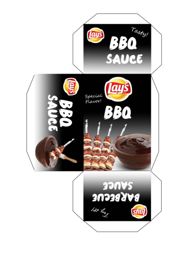

Class: Comunication Design
Teacher: Mr. Rubino
Project Name: Template
Course Description: Develop a broad perspective of the art, design and communication
theory, processes and tools, applications and occupational opportunities in multimedia design.
Design elements and principles will be applied to projects ranging from print media publications,
digital presentations, and website design incorporated with text, graphics, sound, animations and video.
The following picture was I made in Comunication Design class. It is a template I design in class.
This template is a package for food. We have to design and let people want to buy it.
